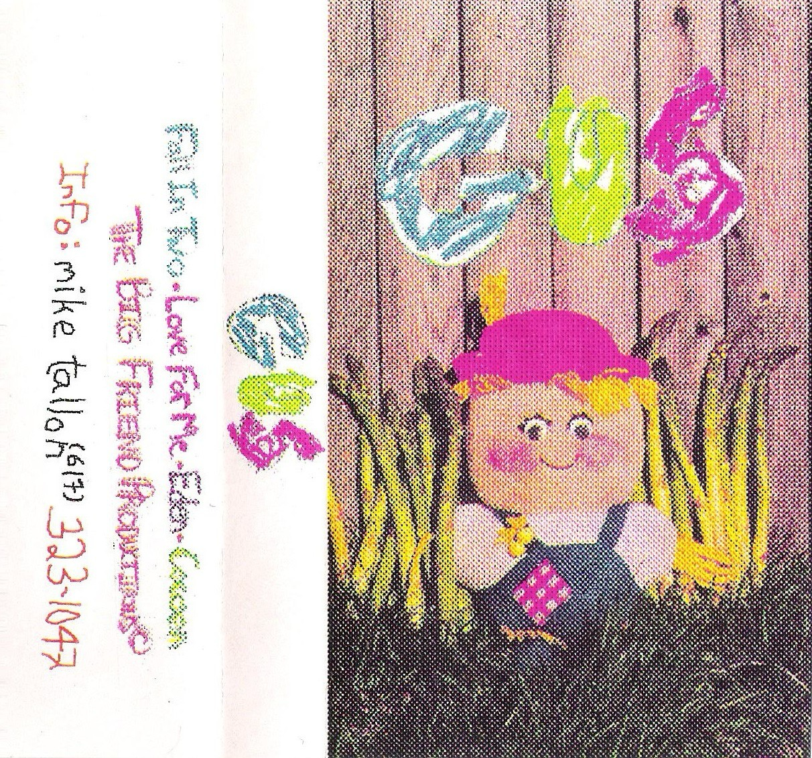
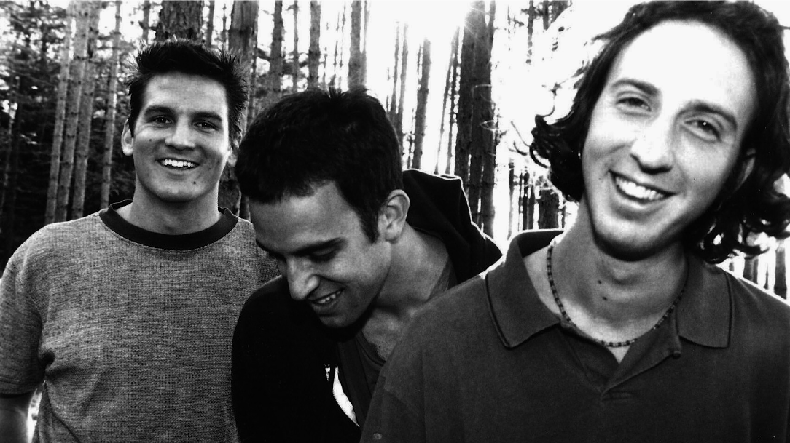
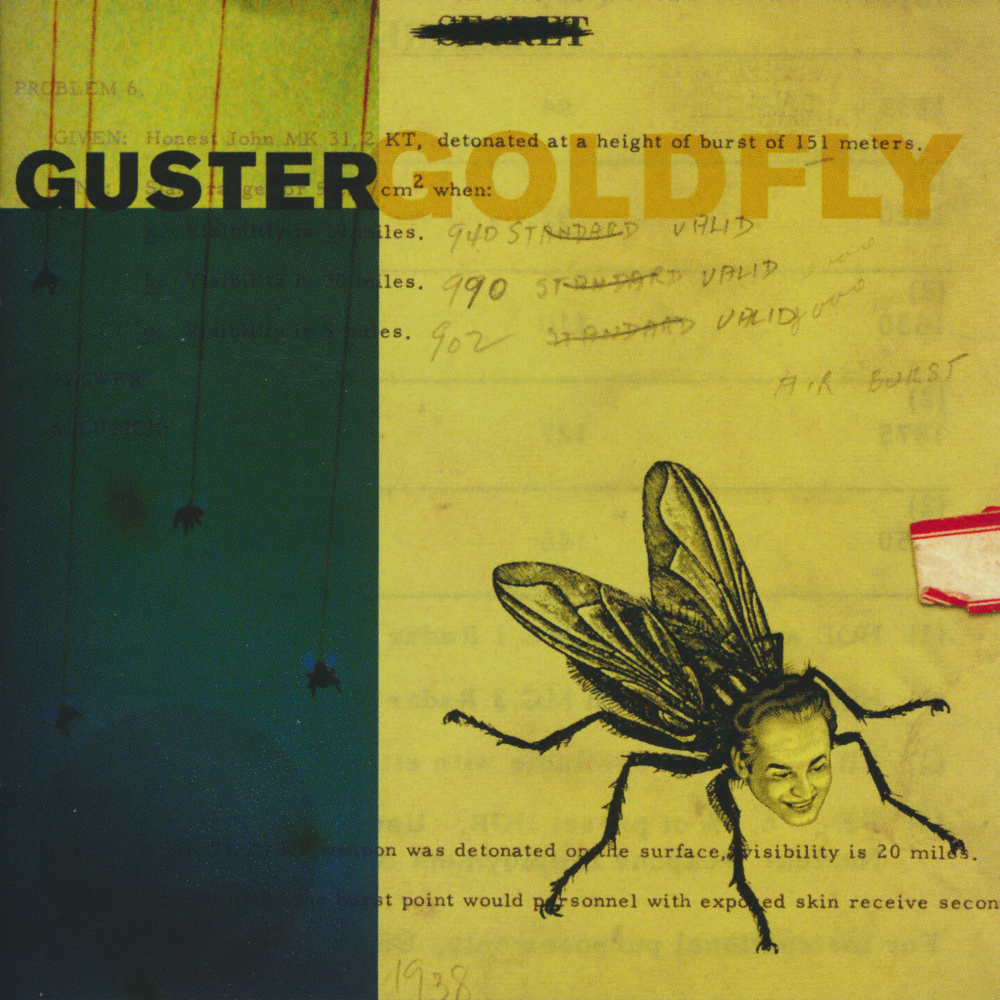
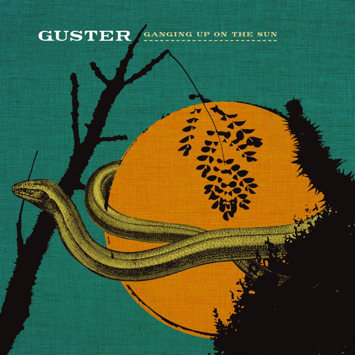
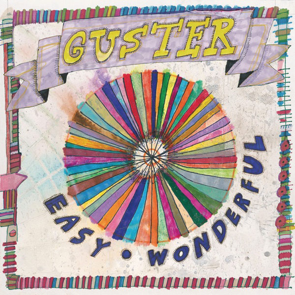
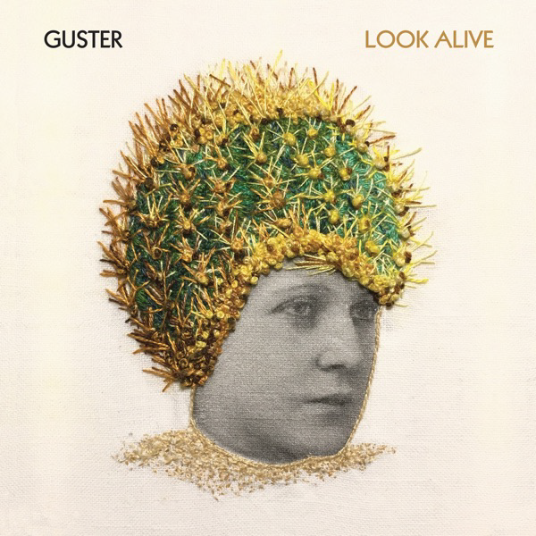

Guster, originally known as Gus, is a band from Somerville, Massachusetts. It was formed in 1991 by three students at Tufts University. The band has produced nine studio albums, and has toured and played live shows regularly since their founding. A tenth studio album is in progress.

The band’s founding membership was Ryan Miller, Adam Gardner, and Brian Rosenworcel. Joe Pisapia joined the band following the release of Keep it Together, and helped with the production of their fourth studio album, Ganging Up on the Sun. He remained with the band until after the release of their fifth album, Easy Wonderful. He was succeeded by Luke Reynolds who remains a part of the band to this day.






